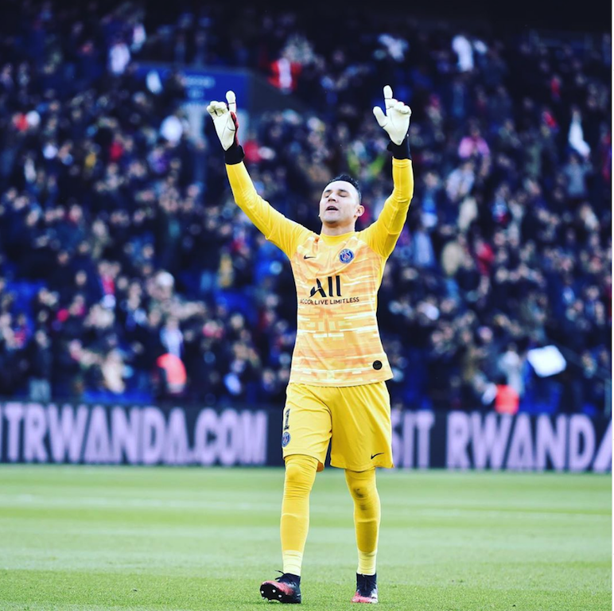
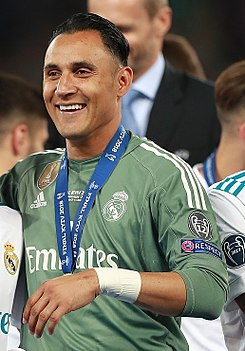

Keylor Antonio Navas Gamboa (AFI: keilor 'naβas), (San José, Costa Rica, 15 de diciembre de 1986), simplemente conocido como Keylor Navas, es un futbolista costarricense, nacionalizado español. Juega de portero y su equipo actual es el París Saint-Germain F. C. de la Ligue 1 de Francia. Comenzó su carrera profesional en el Deportivo Saprissa, donde consiguió cinco títulos costarricenses de manera consecutiva, además del Campeonato de verano 2010. Con el equipo saprissista se destaca la histórica participación en el Mundial de Clubes de 2005, en el cual obtuvo el tercer lugar de la competición. Anteriormente, se coronó campeón de la Copa de Campeones de la Concacaf de ese mismo año. A la edad de 23 años, se marchó a España para jugar con el Albacete Balompié en la temporada 2010-11 de la Segunda División. Sin embargo, su conjunto descendió y fue cedido a préstamo al Levante Unión Deportiva. En su primera temporada solamente sumó un partido de Liga, si bien la temporada 2013-14, tras la salida de Gustavo Munúa, se hizo con la titularidad. Con esto, fue galardonado con el premio al Mejor Guardameta de la Liga. premio otorgado por la LFP en dicho año basado en el porcentaje de paradas. En 2014 fue fichado por el Real Madrid por su brillante actuación en el Mundial de Brasil con la selección costarricense, en combinación con lo realizado en la temporada pasada. Al inicio de su periodo como jugador merengue, conquistó la Supercopa de Europa 2014 y en diciembre el Mundial de Clubes. En la temporada 2015-16 llegó al punto más alto de su carrera tras colocarse como el segundo mejor guardameta con más tiempo de imbatibilidad de la Liga de Campeones de la UEFA, con 738 minutos, superando el 8 de marzo de 2016 la marca de 657 minutos del neerlandés Edwin van der Sar. Internacional absoluto con Costa Rica desde el 12 de octubre de 2008, su mejor actuación se dio en la cita mundialista de Brasil 2014 donde su selección avanzó por primera vez a cuartos de final. El guardameta fue postulado al mejor portero del mundial –el Guante de Oro de la FIFA– por sus 21 paradas en cinco partidos. Además, Navas fue el mejor portero de la Copa de Oro de la Concacaf 2009.
Navas debutó en Primera División con el Deportivo Saprissa en 2005, jugando antes en las divisiones menores de ese club. Antes de esto jugó en las divisiones menores de la Asociación Deportiva Escuela de Fútbol Integral de Pedregoso (ADEFIP); una escuela de fútbol que se ubica en Pérez Zeledón, su lugar natal. Con Saprissa ganó seis campeonatos nacionales y una Copa de Campeones de la Concacaf. También integró la planilla saprissista que jugó en el Campeonato Mundial de Clubes de la FIFA 2005, aunque no vio acción.
En el verano de 2010, Navas se marchó al fútbol europeo fichando por el Albacete Balompié de la Segunda División de España, club que llevaba intentando su incorporación desde la temporada anterior. Llegó al 'Alba' con un contrato de tres años, exactamente 20 años después de su compatriota Gabelo Conejo, quien ocupó la misma posición. Jugó en 36 partidos de los 42 en su primera temporada, pero su equipo sufrió el descenso de categoría. Por una cláusula pactada en su contrato, el costarricense no podía jugar en una categoría inferior a Segunda División por lo que el club manchego se vio obligado a buscarle una salida en forma de cesión a la espera de ascender la siguiente temporada.
Para la liga de Primera División de España 2011/12, Navas jugó a préstamo con el Levante. En el Levante, en la temporada 2011/12 jugó habitualmente en los partidos de Copa del Rey, ya que el titular en la Liga fue el uruguayo Gustavo Munúa. En esa campaña destacó además por la actuación que tuvo con la selección nacional de Costa Rica en el encuentro amistoso que jugó contra España. Además jugó uno de Liga, el que cerró la temporada con un triunfo 3-0 ante el Athletic Club, en el que el Levante confirmó su clasificación europea por primera vez en su historia. Durante el periodo de traspasos, el Levante consiguió fichar a Navas por 3 temporadas, un traspaso que aunque hubiera sido mucho más caro, según informan Diario Marca y Transfermarkt al club solo le costó 150.000€, dada la precaria situación del Albacete Balompié, que no logró ascender de categoría. Tras la salida de Gustavo Munúa, Navas fue el portero titular para el Levante en la temporada 2013-14, y fue nominado como mejor portero de la liga junto a Thibaut Courtois del Atlético de Madrid y Willy Caballero del Málaga, posteriormente ganando el premio. En marzo de 2014, la Liga le otorgó el premio al mejor jugador del mes, el primer portero en ganar el galardón. Su temporada fue sobresaliente, teniendo memorables partidos, que salvaron un año más al Levante UD de descender.
El 3 de agosto de 2014, el Real Madrid confirmó el fichaje del guardameta por un pago de unos 10 millones de euros, según lo estipula la cláusula de rescisión del portero costarricense, que queda vinculado al club durante las siguientes seis temporadas. Debutó con el club el 16 de agosto de 2014 en un partido amistoso contra la Fiorentina. Su debut en un partido oficial, se produjo el 23 de septiembre, en la cuarta jornada de Liga ante el Elche en el Estadio Santiago Bernabéu (5-1). Con la llegada de Rafael Benítez, Navas se convirtió oficialmente en el portero titular del Real Madrid. Navas tuvo su primer debut oficial con Benítez en la Liga contra el Real Betis el 29 de agosto, en un partido que quedó 5-0, a favor del Real Madrid, atajando un penal en el segundo tiempo. El 31 de agosto de 2015 se iba a hacer un intercambio de porteros con el Manchester United, ya que el presidente del Real Madrid, Florentino Pérez, quería al portero del Manchester United, David de Gea, traspasando a Navas al Manchester United. Sin embargo, no se pudo hacer porque no se enviaron los papeles a tiempo a la Liga Española, quedándose finalmente Navas en el Real Madrid. A raíz de esto, Keylor no desaprovechó la oportunidad y mostró un excelente rendimiento en los primeros encuentros de la temporada, sobre todo en el partido contra el Atlético de Madrid, en el que le detuvo un penalti a Antoine Griezmann e hizo una gran actuación al final del encuentro a pesar del empate 1-1. En el clásico cayó 0-4 ante el Fútbol Club Barcelona con un diezmado Real Madrid y siguió con una racha regular con 8 goles en 10 partidos, en el partido en Mestalla contra el Valencia quedó 2-2 gracias a una gran atajada que salvó al Real Madrid al minuto 92'. Es el segundo portero con más minutos sin recibir goles en la historia de la Champions League (738 minutos), solo siendo superado por Jens Lehmann. El 28 de mayo de 2016, siendo el portero titular de su equipo, ganó con el Real Madrid la Liga de Campeones de la UEFA, al derrotar al Atlético de Madrid en la tanda de penaltis (5-3), lo convierte en el primer costarricense en ganar este trofeo en una final de fútbol masculino. También conquistó como portero titular la siguiente edición de la Liga de Campeones, lo que supuso su segundo título en la máxima competición continental a nivel de clubes, y la Primera División de España por primera vez. Ganador de la decimotercera Liga de Campeones de la UEFA del Real Madrid disputada en Kiev el 26 de mayo de 2018. En el mercado de verano de 2018, el club merengue cierra el fichaje del guardameta belga Thibaut Courtois, provocando que el costarricense pierda regularidad en el primer equipo. Finalmente, Courtois se consolida en el primer equipo, relegando a Navas al banquillo, si bien esa misma temporada se convierte en el portero extranjero que más partidos ha jugado con la elástica madridista. Al finalizar dicha temporada el entrenador madridista le comunica que no cuenta con sus servicios, y aun así decide continuar y luchar por un puesto en el equipo.
El 2 de septiembre de 2019 fue traspasado al París Saint-Germain hasta el año 2023. Jugó 21 encuentros de la Ligue 1 en su primer año en Francia, de los cuales mantuvo el arco en cero en 17 encuentros. En abril de 2020 se dio por concluida la Ligue 1 2019-20, consagrando campeón al PSG; Navas obtuvo su primer trofeo en el país galo.